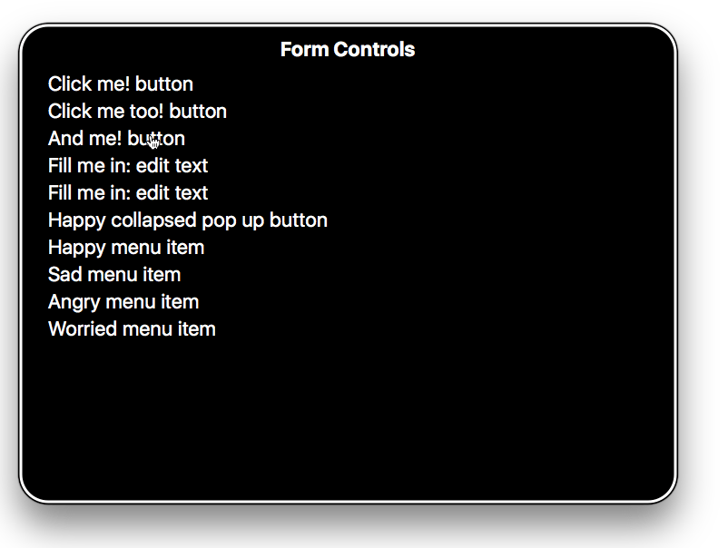
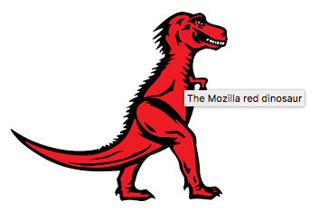

A great deal of web content can be made accessible just by making sure the correct Hypertext Markup Language elements are used for the correct purpose at all times. This article looks in detail at how HTML can be used to ensure maximum accessibility.
| Prerequisites: | Basic computer literacy, a basic understanding of HTML (see Introduction to HTML), and an understanding of what accessibility is. |
|---|---|
| Objective: | To gain familiarity with the features of HTML that have accessibility benefits and how to use them appropriately in your web documents. |
As you learn more about HTML — read more resources, look at more examples, etc. — you'll keep seeing a common theme: the importance of using semantic HTML (sometimes called POSH, or Plain Old Semantic HTML). This means using the correct HTML elements for their intended purpose as much as possible.
You might wonder why this is so important. After all, you can use a combination of CSS and JavaScript to make just about any HTML element behave in whatever way you want. For example, a control button to play a video on your site could be marked up like this:
<div>Play video</div>
But as you'll see in greater detail later on, it makes sense to use the correct element for the job:
<button>Play video</button>
Not only do HTML <button>s have some suitable styling applied by default (which you will probably want to override), they also have built-in keyboard accessibility — users can navigate between buttons using the Tab key and activate their selection using Return or Enter.
Semantic HTML doesn't take any longer to write than non-semantic (bad) markup if you do it consistently from the start of your project. Even better, semantic markup has other benefits beyond accessibility:
<div>s, etc., so your documents will be more findable by customers.Let's get on and look at accessible HTML in more detail.
Note: It is a good idea to have a screen reader set up on your local computer so that you can do some testing of the examples shown below. See our Screen readers guide for more details.
We've already talked about the importance of proper semantics, and why we should use the right HTML element for the job. This cannot be ignored, as it is one of the main places that accessibility is badly broken if not handled properly.
Out there on the web, the truth is that people do some very strange things with HTML markup. Some abuses of HTML are due to legacy practices that have not been completely forgotten, and some are just plain ignorance. Whatever the case, you should replace such bad code.
Sometimes you are not in the position to get rid of lousy markup — your pages might be generated by some kind of server-side framework over which you don't have full control, or you might have third party content on your page (such as ad banners) over which you have no control.
The goal isn't "all or nothing"; every improvement you can make will help the cause of accessibility.
One of the best accessibility aids a screen reader user can have is an excellent content structure with headings, paragraphs, lists, etc. An excellent semantic example might look something like the following:
<h1>My heading</h1> <p>This is the first section of my document.</p> <p>I'll add another paragraph here too.</p> <ol> <li>Here is</li> <li>a list for</li> <li>you to read</li> </ol> <h2>My subheading</h2> <p>This is the first subsection of my document. I'd love people to be able to find this content!</p> <h2>My 2nd subheading</h2> <p>This is the second subsection of my content. I think is more interesting than the last one.</p>
We've prepared a version with longer text for you to try out with a screen reader (see good-semantics.html). If you try navigating through this, you'll see that this is pretty easy to navigate:
People sometimes write headings, paragraphs, etc. using presentational HTML and line breaks, something like the following:
<font size="7">My heading</font> <br><br> This is the first section of my document. <br><br> I'll add another paragraph here too. <br><br> 1. Here is <br><br> 2. a list for <br><br> 3. you to read <br><br> <font size="5">My subheading</font> <br><br> This is the first subsection of my document. I'd love people to be able to find this content! <br><br> <font size="5">My 2nd subheading</font> <br><br> This is the second subsection of my content. I think is more interesting than the last one.
If you try our longer version out with a screen reader (see bad-semantics.html), you'll not have a very good experience — the screen reader hasn't got anything to use as signposts, so you can't retrieve a useful table of contents, and the whole page is seen as a single giant block, so it is just read out in one go, all at once.
There are other issues too beyond accessibility — it is harder to style the content using CSS, or manipulate it with JavaScript, for example, because there are no elements to use as selectors.
The language you use can also affect accessibility. In general, you should use clear language that is not overly complex and doesn't use unnecessary jargon or slang terms. This not only benefits people with cognitive or other disabilities; it benefits readers for whom the text is not written in their first language, younger people ... everyone, in fact! Apart from this, you should try to avoid using language and characters that don't get read out clearly by the screen reader. For example:
In the bad old days, people used to create page layouts using HTML tables — using different table cells to contain the header, footer, sidebar, main content column, etc. This is not a good idea because a screen reader will likely give out confusing readouts, especially if the layout is complex and has many nested tables.
Try our example table-layout.html example, which looks something like this:
<table width="1200">
<!-- main heading row -->
<tr id="heading">
<td colspan="6">
<h1 align="center">Header</h1>
</td>
</tr>
<!-- nav menu row -->
<tr id="nav" bgcolor="#ffffff">
<td width="200">
<a href="#" align="center">Home</a>
</td>
<td width="200">
<a href="#" align="center">Our team</a>
</td>
<td width="200">
<a href="#" align="center">Projects</a>
</td>
<td width="200">
<a href="#" align="center">Contact</a>
</td>
<td width="300">
<form width="300">
<input type="search" name="q" placeholder="Search query" width="300">
</form>
</td>
<td width="100">
<button width="100">Go!</button>
</td>
</tr>
<!-- spacer row -->
<tr id="spacer" height="10">
<td>
</td>
</tr>
<!-- main content and aside row -->
<tr id="main">
<td id="content" colspan="4" bgcolor="#ffffff">
<!-- main content goes here -->
</td>
<td id="aside" colspan="2" bgcolor="#ff80ff" valign="top">
<h2>Related</h2>
<!-- aside content goes here -->
</td>
</tr>
<!-- spacer row -->
<tr id="spacer" height="10">
<td>
</td>
</tr>
<!-- footer row -->
<tr id="footer" bgcolor="#ffffff">
<td colspan="6">
<p>©Copyright 2050 by nobody. All rights reversed.</p>
</td>
</tr>
</table>
If you try to navigate this using a screen reader, it will probably tell you that there's a table to be looked at (although some screen readers can guess the difference between table layouts and data tables). You'll then likely (depending on which screen reader you're using) have to go down into the table as an object and look at its features separately, then get out of the table again to carry on navigating the content.
Table layouts are a relic of the past — they made sense back when CSS support was not widespread in browsers, but now they just create confusion for screen reader users. Additionally, their source code requires more markup, which makes them less flexible and more difficult to maintain. You can verify these claims by comparing your previous experience with a more modern website structure example, which could look something like this:
<header>
<h1>Header</h1>
</header>
<nav>
<!-- main navigation in here -->
</nav>
<!-- Here is our page's main content -->
<main>
<!-- It contains an article -->
<article>
<h2>Article heading</h2>
<!-- article content in here -->
</article>
<aside>
<h2>Related</h2>
<!-- aside content in here -->
</aside>
</main>
<!-- And here is our main footer that is used across all the pages of our website -->
<footer>
<!-- footer content in here -->
</footer>
If you try our more modern structure example with a screen reader, you'll see that the layout markup no longer gets in the way and confuses the content readout. It is also much leaner and smaller in terms of code size, which means easier to maintain code, and less bandwidth for the user to download (particularly prevalent for those on slow connections).
Another consideration when creating layouts is using HTML5 semantic elements as seen in the above example (see content sectioning) — you can create a layout using only nested {{htmlelement("div")}} elements, but it is better to use appropriate sectioning elements to wrap your main navigation ({{htmlelement("nav")}}), footer ({{htmlelement("footer")}}), repeating content units ({{htmlelement("article")}}), etc. These provide extra semantics for screen readers (and other tools) to give user extra clues about the content they are navigating (see Screen Reader Support for new HTML5 Section Elements for an idea of what screen reader support is like).
Note: In addition to having good semantics and an attractive layout, your content should make logical sense in its source order — you can always place it where you want using CSS later on, but you should get the source order right to start with, so what screen reader users get read out to them will make sense.
By UI controls, we mean the main parts of web documents that users interact with — most commonly buttons, links, and form controls. In this section, we'll look at the basic accessibility concerns to be aware of when creating such controls. Later articles on WAI-ARIA and multimedia will look at other aspects of UI accessibility.
One key aspect of the accessibility of UI controls is that by default, browsers allow them to be manipulated by the keyboard. You can try this out using our native-keyboard-accessibility.html example (see the source code). Open this in a new tab, and try pressing the tab key; after a few presses, you should see the tab focus start to move through the different focusable elements. The focused elements are given a highlighted default style in every browser (it differs slightly between different browsers) so that you can tell what element is focused.
From Firefox 84 you can also enable an overlay that shows the page tabbing order. For more information see: Accessibility Inspector > Show web page tabbing order.
You can then press Enter/Return to follow a focused link or press a button (we've included some JavaScript to make the buttons alert a message), or start typing to enter text in a text input. Other form elements have different controls, for example, the {{htmlelement("select")}} element can have its options displayed and cycled between using the up and down arrow keys.
Note: Different browsers may have different keyboard control options available. See Using native keyboard accessibility for more details.
You essentially get this behavior for free, just by using the appropriate elements, e.g.
<h1>Links</h1> <p>This is a link to <a href="https://www.mozilla.org">Mozilla</a>.</p> <p>Another link, to the <a href="https://developer.mozilla.org">Mozilla Developer Network</a>.</p> <h2>Buttons</h2> <p> <button data-message="This is from the first button">Click me!</button> <button data-message="This is from the second button">Click me too!</button> <button data-message="This is from the third button">And me!</button> </p> <h2>Form</h2> <form> <div> <label for="name">Fill in your name:</label> <input type="text" id="name" name="name"> </div> <div> <label for="age">Enter your age:</label> <input type="text" id="age" name="age"> </div> <div> <label for="mood">Choose your mood:</label> <select id="mood" name="mood"> <option>Happy</option> <option>Sad</option> <option>Angry</option> <option>Worried</option> </select> </div> </form>
This means using links, buttons, form elements, and labels appropriately (including the {{htmlelement("label")}} element for form controls).
However, it is again the case that people sometimes do strange things with HTML. For example, you sometimes see buttons marked up using {{htmlelement("div")}}s, for example:
<div data-message="This is from the first button">Click me!</div> <div data-message="This is from the second button">Click me too!</div> <div data-message="This is from the third button">And me!</div>
But using such code is not advised — you immediately lose the native keyboard accessibility you would have had if you'd just used {{htmlelement("button")}} elements, plus you don't get any of the default CSS styling that buttons get.
Adding such advantages back in takes a bit of work (you can see an example in our fake-div-buttons.html example — also see the source code). Here we've given our fake <div> buttons the ability to be focused (including via tab) by giving each one the attribute tabindex="0":
<div data-message="This is from the first button" tabindex="0">Click me!</div> <div data-message="This is from the second button" tabindex="0">Click me too!</div> <div data-message="This is from the third button" tabindex="0">And me!</div>
Basically, the {{htmlattrxref("tabindex")}} attribute is primarily intended to allow tabbable elements to have a custom tab order (specified in positive numerical order), instead of just being tabbed through in their default source order. This is nearly always a bad idea, as it can cause major confusion. Use it only if you really need to, for example, if the layout shows things in a very different visual order to the source code, and you want to make things work more logically. There are two other options for tabindex:
tabindex="0" — as indicated above, this value allows elements that are not normally tabbable to become tabbable. This is the most useful value of tabindex.tabindex="-1" — this allows not normally tabbable elements to receive focus programmatically, e.g., via JavaScript, or as the target of links. Whilst the above addition allows us to tab to the buttons, it does not allow us to activate them via the Enter/Return key. To do that, we had to add the following bit of JavaScript trickery:
document.onkeydown = function(e) {
if(e.keyCode === 13) { // The Enter/Return key
document.activeElement.click();
}
};
Here we add a listener to the document object to detect when a button has been pressed on the keyboard. We check what button was pressed via the event object's keyCode property; if it is the keycode that matches Return/Enter, we run the function stored in the button's onclick handler using document.activeElement.click(). activeElement which gives us the element that is currently focused on the page.
This is a lot of extra hassle to build the functionality back in. And there's bound to be other problems with it. Better to just use the right element for the right job in the first place.
UI control text labels are very useful to all users, but getting them right is particularly important to users with disabilities.
You should make sure that your button and link text labels are understandable and distinctive. Don't just use "Click here" for your labels, as screen reader users sometimes get up a list of buttons and form controls. The following screenshot shows our controls being listed by VoiceOver on Mac.

Make sure your labels make sense out of context, read on their own, as well as in the context of the paragraph they are in. For example, the following shows an example of good link text:
<p>Whales are really awesome creatures. <a href="whales.html">Find out more about whales</a>.</p>
but this is bad link text:
<p>Whales are really awesome creatures. To find more out about whales, <a href="whales.html">click here</a>.</p>
Note: You can find a lot more about link implementation and best practices in our Creating hyperlinks article. You can also see some good and bad examples at good-links.html and bad-links.html.
Form labels are also important for giving you a clue about what you need to enter into each form input. The following seems like a reasonable enough example:
Fill in your name: <input type="text" id="name" name="name">
However, this is not so useful for disabled users. There is nothing in the above example to associate the label unambiguously with the form input and make it clear how to fill it in if you cannot see it. If you access this with some screen readers, you may only be given a description along the lines of "edit text."
The following is a much better example:
<div> <label for="name">Fill in your name:</label> <input type="text" id="name" name="name"> </div>
With code like this, the label will be clearly associated with the input; the description will be more like "Fill in your name: edit text."

As an added bonus, in most browsers associating a label with a form input means that you can click the label to select or activate the form element. This gives the input a bigger hit area, making it easier to select.
Note: you can see some good and bad form examples in good-form.html and bad-form.html.
You can find a nice explanation of the importance of proper text labels, and how to investigate text label issues using the Firefox Accessibility Inspector, in the following video:
{{EmbedYouTube("YhlAVlfH0rQ")}}
A basic data table can be written with very simple markup, for example:
<table>
<tr>
<td>Name</td>
<td>Age</td>
<td>Gender</td>
</tr>
<tr>
<td>Gabriel</td>
<td>13</td>
<td>Male</td>
</tr>
<tr>
<td>Elva</td>
<td>8</td>
<td>Female</td>
</tr>
<tr>
<td>Freida</td>
<td>5</td>
<td>Female</td>
</tr>
</table>
But this has problems — there is no way for a screen reader user to associate rows or columns together as groupings of data. To do this, you need to know what the header rows are and if they are heading up rows, columns, etc. This can only be done visually for the above table (see bad-table.html and try the example out yourself).
Now have a look at our punk bands table example — you can see a few accessibility aids at work here:
scope attribute. This gives you complete groups of data that can be consumed by screen readers as single units.<table> summary attribute both do similar jobs — they act as alt text for a table, giving a screen reader user a useful quick summary of the table's contents. The <caption> element is generally preferred as it makes it's content accessible to sighted users too, who might also find it useful. You don't really need both.Note: See our HTML table advanced features and accessibility article for more details about accessible data tables.
Whereas textual content is inherently accessible, the same cannot necessarily be said for multimedia content — image and video content cannot be seen by visually-impaired people, and audio content cannot be heard by hearing-impaired people. We cover video and audio content in detail in the Accessible multimedia, but for this article we'll look at accessibility for the humble {{htmlelement("img")}} element.
We have a simple example written up, accessible-image.html, which features four copies of the same image:
<img src="dinosaur.png">
<img src="dinosaur.png"
alt="A red Tyrannosaurus Rex: A two legged dinosaur standing upright like a human, with small arms, and a large head with lots of sharp teeth.">
<img src="dinosaur.png"
alt="A red Tyrannosaurus Rex: A two legged dinosaur standing upright like a human, with small arms, and a large head with lots of sharp teeth."
title="The Mozilla red dinosaur">
<img src="dinosaur.png" aria-labelledby="dino-label">
<p id="dino-label">The Mozilla red Tyrannosaurus Rex: A two legged dinosaur standing upright like a human, with small arms, and a large head with lots of sharp teeth.</p>
The first image, when viewed by a screen reader, doesn't really offer the user much help — VoiceOver for example reads out "/dinosaur.png, image". It reads out the filename to try to provide some help. In this example the user will at least know it is a dinosaur of some kind, but often files may be uploaded with machine-generated file names (e.g. from a digital camera) and these file names would likely provide no context to the image's content.
Note: This is why you should never include text content inside an image — screen readers can't access it. There are other disadvantages too — you can't select it and copy/paste it. Just don't do it!
When a screen reader encounters the second image, it reads out the full alt attribute — "A red Tyrannosaurus Rex: A two legged dinosaur standing upright like a human, with small arms, and a large head with lots of sharp teeth.".
This highlights the importance of not only using meaningful file names in case so-called alt text is not available, but also making sure that alt text is provided in alt attributes wherever possible. Note that the contents of the alt attribute should always provide a direct representation of the image and what it conveys visually. Any personal knowledge or extra description shouldn't be included here, as it is not useful for people who have not come across the image before.
One thing to consider is whether your images have meaning inside your content, or whether they are purely for visual decoration, and thus have no meaning. If they are decorative, it is better to write an empty text as a value for alt attribute (see Empty alt attributes) or to just include them in the page as CSS background images.
Note: Read Images in HTML and Responsive images for a lot more information about image implementation and best practices.
If you do want to provide extra contextual information, you should put it in the text surrounding the image, or inside a title attribute, as shown above. In this case, most screen readers will read out the alt text, the title attribute, and the filename. In addition, browsers display title text as tooltips when moused over.

Let's have another quick look at the fourth method:
<img src="dinosaur.png" aria-labelledby="dino-label"> <p id="dino-label">The Mozilla red Tyrannosaurus ... </p>
In this case, we are not using the alt attribute at all — instead, we have presented our description of the image as a regular text paragraph, given it an id, and then used the aria-labelledby attribute to refer to that id, which causes screen readers to use that paragraph as the alt text/label for that image. This is especially useful if you want to use the same text as a label for multiple images — something that isn't possible with alt.
Note: aria-labelledby is part of the WAI-ARIA spec, which allows developers to add in extra semantics to their markup to improve screen reader accessibility where needed. To find out more about how it works, read our WAI-ARIA Basics article.
Images also have another mechanisms available for providing descriptive text. For example, there is a longdesc attribute that is meant to point to a separate web document containing an extended description of the image, for example:
<img src="dinosaur.png" longdesc="dino-info.html">
This sounds like a good idea, especially for infographics like big charts with lots of information on them that could perhaps be represented as an accessible data table instead (see Accessible data tables). However, longdesc is not supported consistently by screen readers, and the content is completely inaccessible to non-screen reader users. It is arguably much better to include the long description on the same page as the image, or link to it with a regular link.
HTML5 includes two new elements — {{htmlelement("figure")}} and {{htmlelement("figcaption")}} — which are supposed to associate a figure of some kind (it could be anything, not necessarily an image) with a figure caption:
<figure> <img src="dinosaur.png" alt="The Mozilla Tyrannosaurus"> <figcaption>A red Tyrannosaurus Rex: A two legged dinosaur standing upright like a human, with small arms, and a large head with lots of sharp teeth.</figcaption> </figure>
Unfortunately, most screen readers don't seem to associate figure captions with their figures yet. That said, the element structure is useful for CSS styling, plus it provides a way to place a description of the image next to it in the source.
<h3> <img src="article-icon.png" alt=""> Tyrannosaurus Rex: the king of the dinosaurs </h3>
There may be times where an image is included in a page's design, but its primary purpose is for visual decoration. You'll notice in the code example above that the image's alt attribute is empty — this is to make screen readers recognize the image, but not attempt to describe the image (instead they'd just say "image", or similar).
The reason to use an empty alt instead of not including it is because many screen readers announce the whole image URL if no alt is provided. In the above example, the image is acting as a visual decoration to the heading it's associated with. In cases like this, and in cases where an image is only decoration and has no content value, you should include an empty alt in your img elements. Another alternative is to use the aria role attribute role="presentation" as this also stops screen readers from reading out alternative text.
Note: if possible you should use CSS to display images that are only decorative.
Links ( the <a> element with an href attribute ), depending on how they are used, can help or harm accessibility. By default, links are accessible in appearance. They can improve accessibility by helping a user quickly navigate to different sections of a document. They can also harm accessibility if their accessible styling is removed or if JavaScript causes them to behave in unexpected ways.
By default, links are visually different from other text in both color and text-decoration, with links being blue and underlined by default, purple and underlined if visited, and with a focus-ring when they receive keyboard focus.
Color should not be used as the sole method of distinguishing links from non-linking content. Link text color, like all text, has to be significantly different from the background color (a 4.5:1 contrast). In addition, links should visually be significantly different from non-linking text. With a minimum contrast requirement of 3:1 between link text and surrounding text and between default, visited, and focus/active states and a 4:5 contrast between all those state colors and the background color.
onclick eventsAnchor tags are often abused with the onclick event to create pseudo-buttons by setting href to "#" or "javascript:void(0)" to prevent the page from refreshing.
These values cause unexpected behavior when copying or dragging links, opening links in a new tab or window, bookmarking, and when JavaScript is still downloading, errors out, or is disabled. This also conveys incorrect semantics to assistive technologies (e.g., screen readers). In these cases, it is recommended to use a {{HTMLElement("button")}} instead. In general you should only use an anchor for navigation using a proper URL.
Links that open in a new tab or window via the target="_blank" declaration and links to whose href value points to a file resource should include an indicator about the behavior that will occur when the link is activated.
People experiencing low vision conditions, who are navigating with the aid of screen reading technology, or who have cognitive concerns may become confused when the new tab, window, or application is opened unexpectedly. Older versions of screen reading software may not even announce the behavior.
<a target="_blank" href="https://www.wikipedia.org/">Wikipedia (opens in a new window)</a>
<a target="_blank" href="2017-annual-report.ppt">2017 Annual Report (PowerPoint)</a>
If an icon is used in place of text to signify this kind of links behavior, make sure it includes an {{HTMLAttrxRef("alt", "img", "alternate description", "true")}}.
A skip link, also known as skipnav, is an a element placed as close as possible to the opening {{HTMLElement("body")}} element that links to the beginning of the page's main content. This link allows people to bypass content repeated throughout multiple pages on a website, such as a website's header and primary navigation.
Skip links are especially useful for people who navigate with the aid of assistive technology such as switch control, voice command, or mouth sticks/head wands, where the act of moving through repetitive links can be a laborious task.
Large amounts of interactive content—including anchors—placed in close visual proximity to each other should have space inserted to separate them. This spacing is beneficial for people who suffer from fine motor control issues and may accidentally activate the wrong interactive content while navigating.
Spacing may be created using CSS properties such as {{CSSxRef("margin")}}.
You've reached the end of this article, but can you remember the most important information? See Test your skills: HTML Accessibility to verify that you've retained this information before you move on.
You should now be well-versed in writing accessible HTML for most occasions. Our WAI-ARIA basics article will help to fill gaps in this knowledge, but this article has taken care of the basics. Next up we'll explore CSS and JavaScript, and how accessibility is affected by their good or bad use.
{{PreviousMenuNext("Learn/Accessibility/What_is_Accessibility","Learn/Accessibility/CSS_and_JavaScript", "Learn/Accessibility")}}